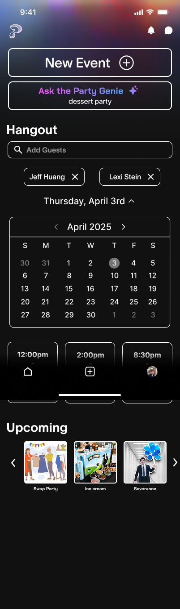
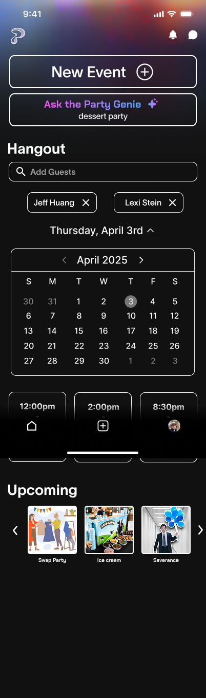

Hi-Fi Prototype
Feedback on Wireframes
We met with our intermediary contact as well as our Partiful point of contact, who gave us some feedback:
- The when2meet aspect may be overwhelming for simple hangouts.
- Having the calendar on the home page may be too busy.
- The homepage may have too much content; may feel too busy or condensed.
- It may be too formal for the user to still be designated as a “host” for a casual hangout.
After receiving feedback from our point of contact, we focused on the following changes:
- Simplifying the user flow, especially the home page, by limiting the different sections on screen to the most important ones, and shrinking the Party Genie.
- Simplifying calendar functionality so it’s more intuitive what the user needs to press.
We decided to continue with the design that had the hangout on the homescreen, as we felt that this reflected Partiful’s design goals in making a casual option that is more discoverable. We moved onto creating a high-fidelity prototype using Figma, which you can find below, along with our Loom walkthrough video.
We then met with our Partiful point of contact for a final critique. In terms of the feedback we received:
- The time picker may still be overwhelming for some users, and it’s unknown how intuitive the design is.
- We should check how the yes/no/maybe colored icons appear with a variety of profile photos, including the default grey one, in case it’s overwhelming.
- For yes/no/maybe functionality, it may be nice to have a “I’m down” option that feels more casual.
We appreciated the feedback we received, and found a lot of this applicable; on a future iteration, we would want to incorporate the simplified “I’m down” option, and test the accept/reject icons on a variety of profile photos. In addition, we’d like to conduct some user testing for the intuitivity of the homescreen hangout functionality.
 
